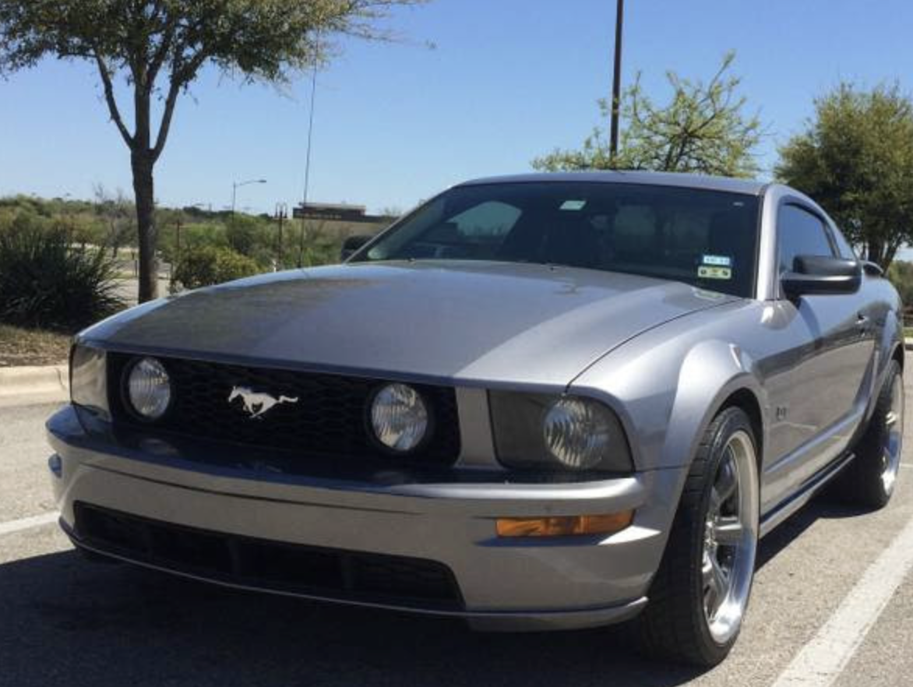
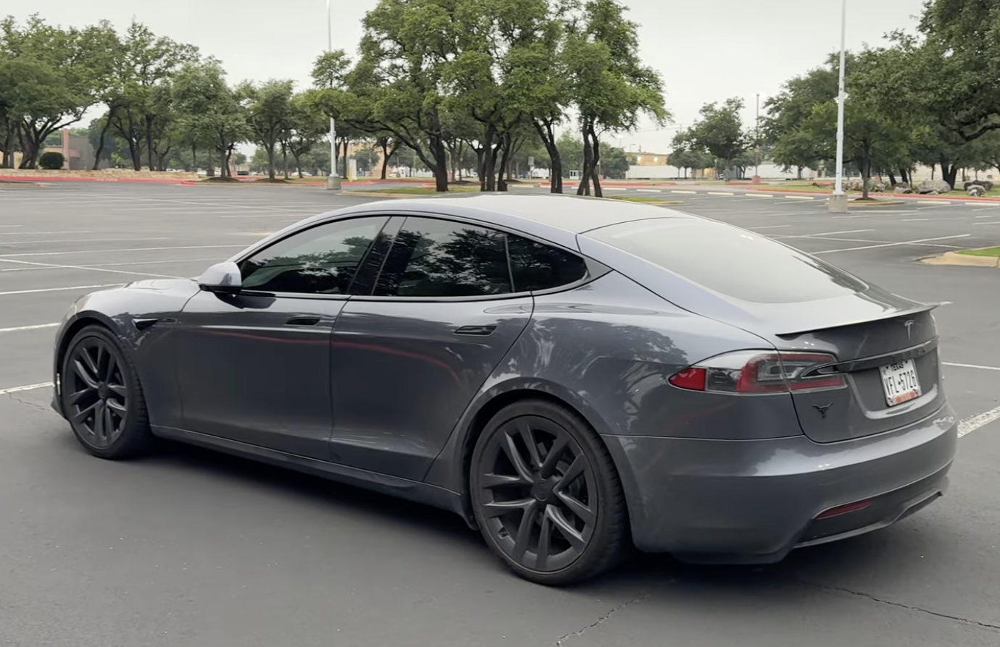
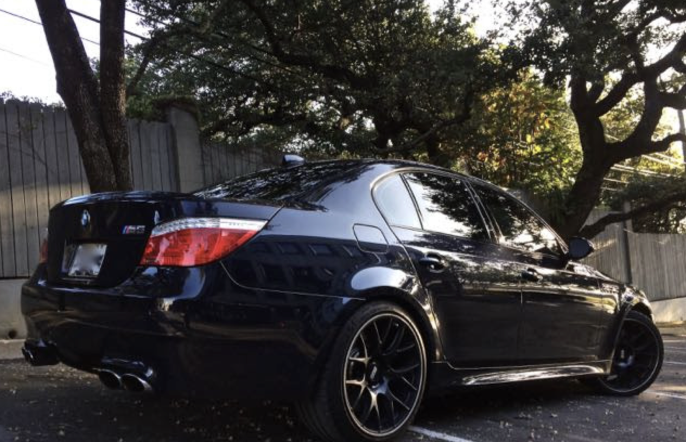
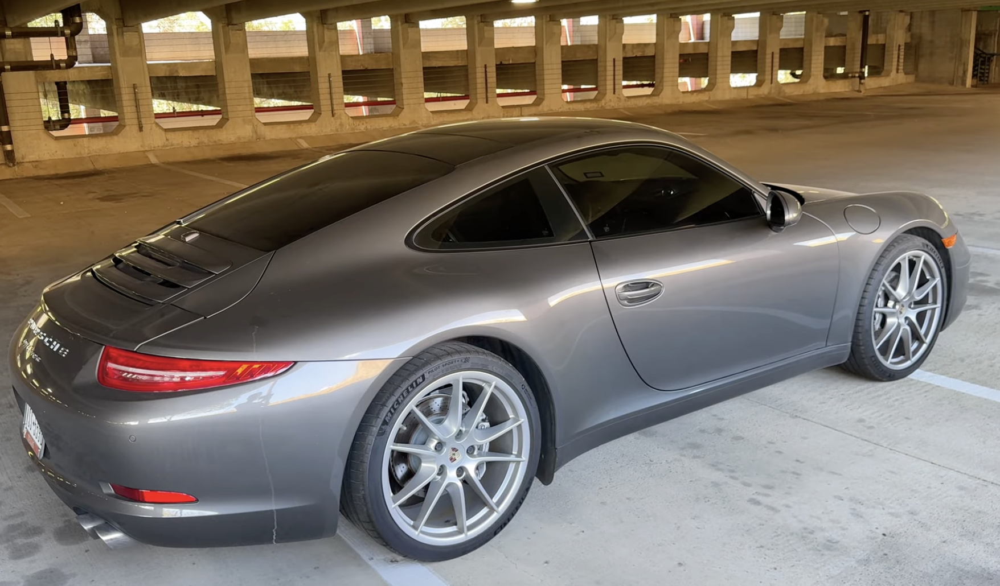

06. The Fun Stuff
Outside of work, I'm a car guy. I love buying and selling used cars, hunting for great deals, and experiencing as many different machines as I can. Today I own the 911 and the C63, but they probably won't last long since I rarely stay in a car for more than a year or two.
Below are some of the cars I've owned in the past or currently own.

1997 Pontiac Grand Prix
The one that started it all. My first car, and the beginning of a lifelong obsession.

Ford Mustang GT
Raw V8 power and the car that made me fall in love with American muscle.

Tesla Model S Plaid
1,000+ horsepower and the fastest thing I've ever driven. Had to experience it at least once.

BMW E60 M5
A naturally aspirated V10 in a sedan. BMW will never make anything like this again. One of a kind.

Porsche 911
The dream car. Still in the garage and still puts a smile on my face every time.

Mercedes C63 AMG
The latest addition. A hand-built AMG V8 that sounds as good as it drives.